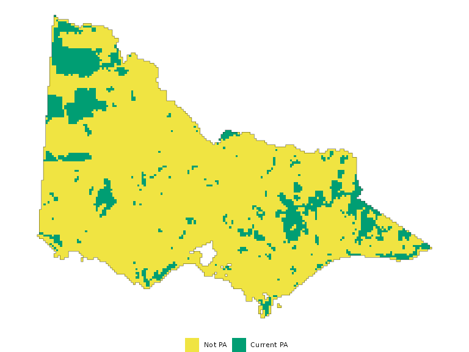
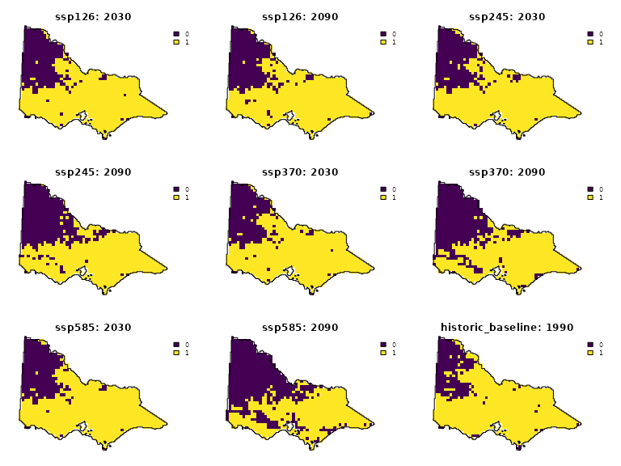
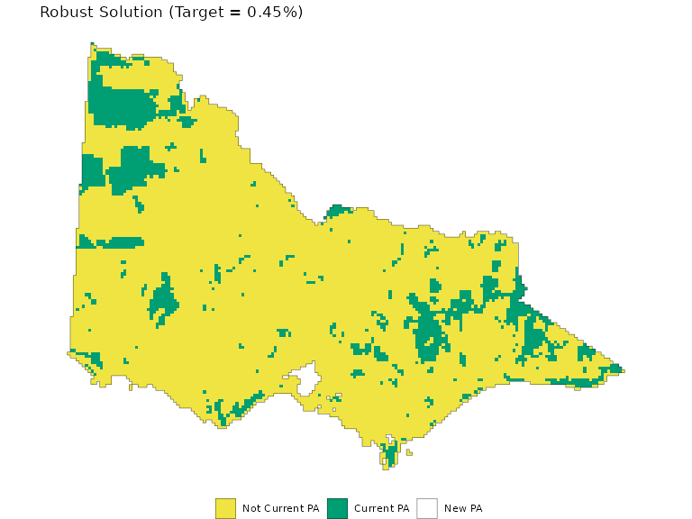
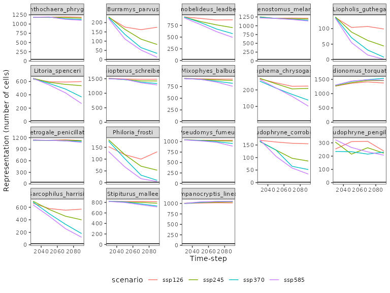
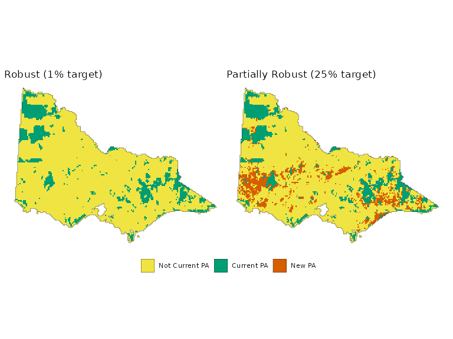
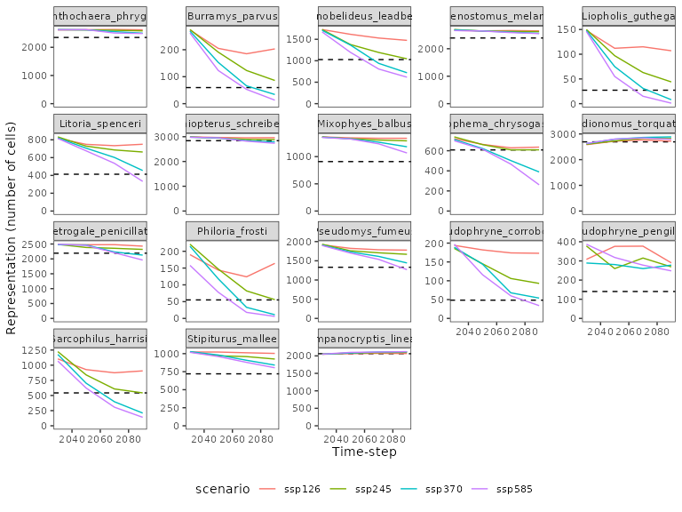
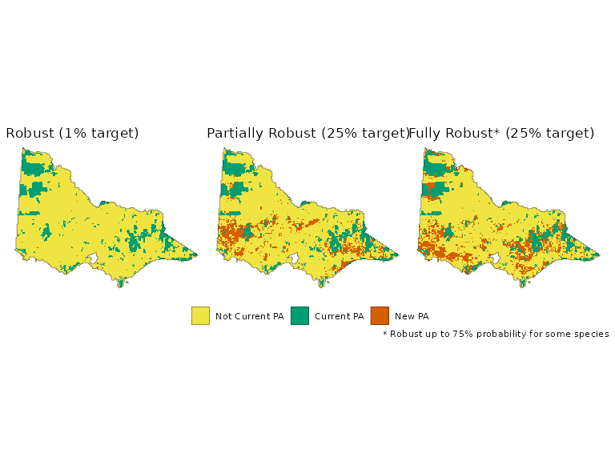
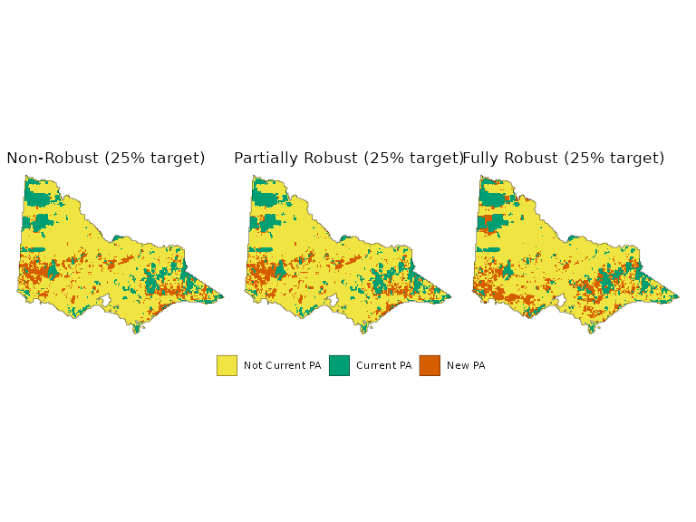
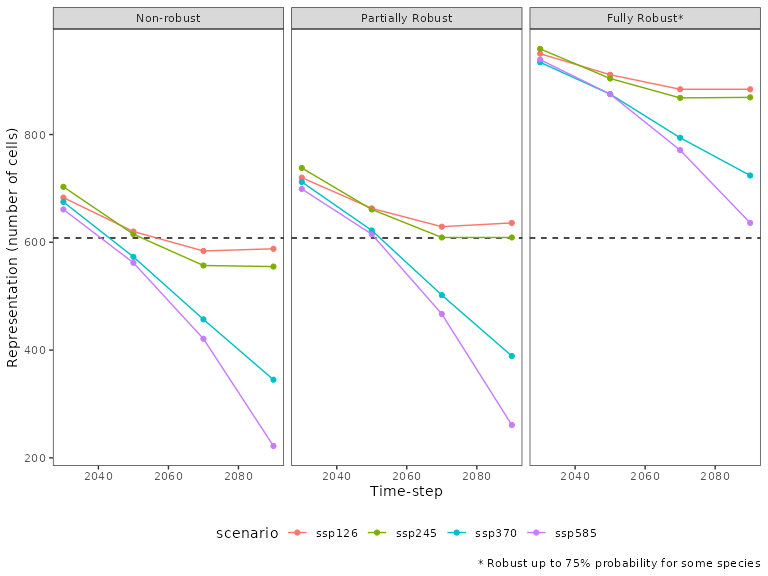

library(prioritizr)
library(robust.prioritizr)
library(terra)
library(dplyr)
library(tibble)
library(stringr)
library(ggplot2)
library(tidyr)
library(tidyterra)
library(patchwork)This example demonstrates how to use robust.prioritizr
for systematic conservation planning in Victoria, Australia. We will use
data for historic and future species occurrence projections,
conservation costs, and existing protected areas.
Dataset
First, we load the dataset bundled with the package. To achieve this, we will use the following functions.
species <- get_vic_species()
cost <- get_vic_cost()
pa <- get_vic_pa()
species_details <- get_vic_species_metadata()
study_area <- get_vic_study_area()The data package contains the following datasets:
Species occurrence (
species): Projections for 18 threatened species across four CMIP6 climate scenarios (e.g., SSP1-RCP2.6, SSP5-RCP8.5) and five time periods (1990-2090). Derived from Archibald et al. (2024).Species details (
species_details): A table linking the raster layer names to their corresponding species, climate scenarios, and timesteps.Conservation cost (
cost): A proxy for conservation cost based on the 2013 Human Footprint Index by Williams et al. (2020).Protected areas (
pa): The location of current protected areas.Study area (
study_area): A boundary for the state of Victoria.
We first generate a plot of the current protected areas in the state, which act as locked-in constraints that must be selected as part of a planning solution.
pa_categorical <- pa
levels(pa_categorical) <- data.frame(id = 0:1, cover = c("Not PA", "Current PA"))
pa_plt <- ggplot() +
geom_spatraster(data = pa_categorical, na.rm = T) +
geom_sf(data = study_area, fill = NA) +
scale_fill_manual('',
values = c("#F0E442", "#009E73"),
na.value = "transparent", na.translate = FALSE) +
theme_void() +
theme(legend.position = 'bottom')
pa_plt
We can visualize the projected occurrence of the brush-tailed rock-wallaby (Petrogale penicillata), a critically endangered species in Victoria. The figure below shows that the wallaby’s suitable habitat is projected to shrink considerably under a high-emissions climate scenario.
wallaby <- species_details %>%
filter(species == 'Petrogale_penicillata' & timestep %in% c(1990, 2030, 2090))
wallaby_ids <- pull(wallaby, id)
wallaby_maps <- species[[wallaby_ids]]
names(wallaby_maps) <- paste0(pull(wallaby, scenario), ": ", pull(wallaby, timestep))
plot(wallaby_maps, axes = F, maxcell = 1e4, , fun= \() lines(study_area))
As the figure illustrates, the projected distribution of species can
change dramatically depending on the time period and climate scenario.
robust.prioritizr is designed to handle this challenge by
integrating these different scenarios, ensuring the final conservation
plan meets its targets regardless of which future unfolds.
Feature Groupings
A key concept in robust.prioritizr is the
groups argument. In a standard prioritizr
problem, each feature is a single data layer. However,
robust.prioritizr uses multiple layers to
represent a single feature, where each layer corresponds to a different
realization of the data (e.g., a climate projection or time-step), which
the analyst is uncertain about. For the purposes of this analysis, we
consider each climate projection-timestep pair a “realization” of the
data. These data realizations jointly determine the range of uncertainty
the analyst has over their input data.
The groups argument is a character vector that tells the
solver which layers belong to the same feature. This allows the problem
to apply a single, shared target to all scenarios for that feature. For
this example, the group for each layer is simply the species name. Each
group contains the indices of all of the data realizations of a
particular species.
For example, we see that each group (each species) contains a current timestep projection and16 data realizations, comprising of all the climate scenarios and time-steps available for this analysis. To ensure that the planning solution meets the target in the historic baseline for certain, and ensure that meets the target in future projections up to a certain probability, we separate projections for each feature into two groups - the historic baseline (with a “h_” prefix) and the future groups.
species_details$species <- paste0(ifelse(species_details$proj == 'historic_baseline_1990', "h_", ""),
species_details$species)
groups <- species_details$species
table(groups)
#> groups
#> Anthochaera_phrygia Burramys_parvus
#> 16 16
#> Gymnobelideus_leadbeateri h_Anthochaera_phrygia
#> 16 1
#> h_Burramys_parvus h_Gymnobelideus_leadbeateri
#> 1 1
#> h_Lichenostomus_melanops h_Liopholis_guthega
#> 1 1
#> h_Litoria_spenceri h_Miniopterus_schreibersii
#> 1 1
#> h_Mixophyes_balbus h_Neophema_chrysogaster
#> 1 1
#> h_Pedionomus_torquatus h_Petrogale_penicillata
#> 1 1
#> h_Philoria_frosti h_Pseudomys_fumeus
#> 1 1
#> h_Pseudophryne_corroboree h_Pseudophryne_pengilleyi
#> 1 1
#> h_Sarcophilus_harrisii h_Stipiturus_mallee
#> 1 1
#> h_Tympanocryptis_lineata Lichenostomus_melanops
#> 1 16
#> Liopholis_guthega Litoria_spenceri
#> 16 16
#> Miniopterus_schreibersii Mixophyes_balbus
#> 16 16
#> Neophema_chrysogaster Pedionomus_torquatus
#> 16 16
#> Petrogale_penicillata Philoria_frosti
#> 16 16
#> Pseudomys_fumeus Pseudophryne_corroboree
#> 16 16
#> Pseudophryne_pengilleyi Sarcophilus_harrisii
#> 16 16
#> Stipiturus_mallee Tympanocryptis_lineata
#> 16 16Setting a Feasible Target
When using a robust minimum set objective, it is crucial to set a target that is achievable across all scenarios. If a target for a species is higher than its total predicted occurrence in even one scenario, the problem will be infeasible.
robust.prioritizr enforces that features have the same
target within each group, ensuring that the same target is met across
all data realizations. This means that if targets are not consistent
within the same group, it will override targets specified by the user.
The package has the following internal behavior for absolute, relative
and manual targets:
Absolute targets: ensures that the target in absolute terms is met across all climates and time-steps
Relative targets: first, it calculates the “best-case” feature values in each group, by finding the realization in the group that has the highest summed feature value. Then, it calculates the relative target in absolute terms by multiplying the user-supplied target (e.g., 20%) in
add_relative_targetswith the “best-case” feature value. This ensures that the feature representation of the solution meets the relative target even in a “good” realization where the feature is abundant in the study areaManual targets: manual targets must be specified for each realization of each feature. If different targets are specified for features in the same group,
robust.prioritizrwill take the maximum of the target. This means that manual targets should be consistent within the same group, otherwise it would yield unexpected behavior (particularly if the “sense” is altered to “\<=”).
To figure out what useful relative targets to use, we can calculate
the worst-case and best-case feature representations for each species by
using the global function in terra, and then
summarizes the best and worst-case values using dplyr. We
can also find out what is the maximum relative target we can use in the
problem to ensure that our problem is still feasible.
global_sum_species <- global(species, fun = 'sum', na.rm = TRUE) %>%
as.data.frame() %>%
rownames_to_column("name")
worst_case_occurrence <- species_details %>%
select(-any_of("sum")) %>%
left_join(global_sum_species, by = "name") %>%
group_by(species) %>%
filter(!str_detect(species, "h_")) %>%
summarise(worst_case = min(sum),
mean = mean(sum),
pct_20 = max(sum[sum < quantile(sum, 0.2)]),
cvar = mean(sum[sum < quantile(sum, 0.1)]),
best_case = max(sum),
max_relative_target = round(worst_case/ best_case, 4),
pct20_relative_target = round(pct_20/ best_case, 4),
worst_case_scenario = proj[which.min(sum)]) %>%
arrange(max_relative_target)
worst_case_occurrence %>%
head()
#> # A tibble: 6 × 9
#> species worst_case mean pct_20 cvar best_case max_relative_target
#> <chr> <dbl> <dbl> <dbl> <dbl> <dbl> <dbl>
#> 1 Liopholis_guthega 1 109. 17 5.5 220 0.0045
#> 2 Burramys_parvus 17 238. 67 28.5 434 0.0392
#> 3 Philoria_frosti 20 220. 48 29 448 0.0446
#> 4 Sarcophilus_harri… 241 2170. 614 321 4131 0.0583
#> 5 Pseudophryne_corr… 39 194. 81 56.5 311 0.125
#> 6 Litoria_spenceri 612 1653. 1132 766. 2156 0.284
#> # ℹ 2 more variables: pct20_relative_target <dbl>, worst_case_scenario <chr>This shows that if we are interested in a fully robust solution, the maximum relative target that is achievable for this problem would be 0.0045, as in the worst-case scenario, the Snowy Mountains skink (Liopholis guthega) is only represented in 1 5km grid cell, out of 452 grid cells in its best-case scenario. This means that even if all the planning units are selected for conservation, in the worst-case high-emissions climate scenario the Snowy Mountains skink will only be represented in a very small area.
In this piece of code here we also lay the groundwork for alternative relative targets we can use by computing the 20th percentile of maximum species representation achievable. If we let the solution fall below the target for up to 20% of the outcomes, the maximum relative target that is achievable for the Snown Mountains skink would be near 0.073.
After solving the initial problem, we will progress to explore how to increase the relative targets we use by relaxing the robustness of the problem, such that the representation of other species in the data can be increased.
To visualize the planning solutions, we also define a helper function as follows.
# Function to plot a planning solution
plot_planning_soln <- function(soln) {
soln[soln==1] <- 2
soln[pa==1] <- 1
levels(soln) <- data.frame(
id = c(0,1,2),
cover = c("Not Current PA", "Current PA", "New PA")
)
plt <- ggplot() +
geom_spatraster(data = soln, na.rm = T) +
geom_sf(data = study_area, fill = NA, show.legend = TRUE) +
scale_fill_manual('',
values = c("#F0E442", "#009E73", "#D55E00"),
na.value = "transparent", na.translate = FALSE,
drop = FALSE) +
theme_void() +
theme(legend.position = 'bottom')
return(plt)
}Solving the Robust Problem
The workflow for a robust problem is similar to
prioritizr, but with the addition of robust-specific
functions. Here is a breakdown of the problem construction:
-
problem(): Defines the planning units (cost) and features (species scenarios). -
add_absolute_targets(): Sets the conservation target (at least 1 cell). -
add_constant_robust_constraints(): Specifies thegroupsthat link scenarios to features. -
add_robust_min_set_objective(): The robust version of the minimum set objective. -
add_locked_in_constraints(): Locks in existing protected areas. -
add_default_solver(): Selects the solver to use.
rt <- .0045
rpv1 <- problem(cost, species) %>%
add_relative_targets(rt) %>%
add_constant_robust_constraints(groups = groups) %>%
add_robust_min_set_objective() %>%
add_locked_in_constraints(pa) %>%
add_default_solver(verbose = F)
#> ℹ `groups` specifies that 18 feature groups contain a single feature.
#> ℹ As such, the robust optimization procedures cannot account for uncertainty
#> in these feature groups.
rsv1 <- solve(rpv1)
#> ℹ The targets for these groups are transformed based on the `mean()` target
#> value.
plot_planning_soln(rsv1) +
ggtitle("Robust Solution (Target = 0.45%)")
The problem solves as expected.
We can now verify that the target was met for all species across all scenarios and time-steps.
feature_rep_r <- global(species * rsv1, fun = 'sum', na.rm = T) %>%
as.data.frame() %>%
rownames_to_column('name')
worst_case_occurrence$rt <- rt*worst_case_occurrence$best_case
species_details %>%
select(-any_of(contains('sum'))) %>%
arrange(species, scenario, timestep) %>%
left_join(feature_rep_r, by = "name") %>%
filter(!str_detect(species, "^h_")) %>%
mutate(species_scenario = paste(species, scenario)) %>%
ggplot(aes(x = timestep, y = sum, color = scenario, group = species_scenario)) +
facet_wrap(vars(species), scales = "free_y") +
geom_line() +
theme_bw() +
geom_hline(data = worst_case_occurrence, aes(yintercept = rt)) +
labs(x = "Time-step", y = "Representation (number of cells)") +
coord_cartesian(xlim = c(2030, 2090)) +
theme(panel.grid = element_blank(),
legend.position = 'bottom')
The plot shows the target is met in all cases. However, since the target was very low, there is clearly room to protect more habitat for many species. This motivates exploring solutions with higher targets, potentially by relaxing the robustness constraints.
Relaxing robustness to increase the target
As the previous example shows, enforcing targets to be held robustly across all scenarios and timesteps can be unrealistic. This limits the maximum feasible target we can adopt for the planning solution. This also means that there are lots of room to improve the representation of other species. If the robustness of the target is relaxed – say instead of having to hold across all realizations, it only needs to hold at a certain probability – then there will be a lot more room to increase the target.
Users can control the robustness of the solution through the
conf_level parameter in
add_*_robust_constraints, which specifies the proportion of
the constraints that must be met in each group for the solution to be
considered feasible. In this case, specifying 75% means that out of the
16 historic and future climate projections, the solution needs to meet
the target in at least 12 (16 \times 0.75) climate projections/
time-steps. In other words, the target can only be breached for 4
climate projections/ time-steps. By relaxing this target, we can pursue
much more ambitious relative targets (25% protection), while ensuring
that the solution is feasible and reasonably robust under most climate
projections and time-steps.
rt2 <- 0.25
rpv2 <- problem(cost, species) %>%
add_relative_targets(rt2) %>%
robust.prioritizr::add_constant_robust_constraints(groups = groups, conf_level = 0.75) %>%
add_locked_in_constraints(pa) %>%
add_binary_decisions() %>%
robust.prioritizr::add_robust_min_set_objective(method = "chance") %>%
add_default_solver(verbose = F)
#> ℹ `groups` specifies that 18 feature groups contain a single feature.
#> ℹ As such, the robust optimization procedures cannot account for uncertainty
#> in these feature groups.
rsv2 <- solve(rpv2)
#> ℹ The targets for these groups are transformed based on the `mean()` target
#> value.
rs <- (plot_planning_soln(rsv1) +
ggtitle("Robust (1% target)") +
guides(color = 'none', fill = 'none')) +
plot_planning_soln(rsv2) +
ggtitle("Partially Robust (20% target)") +
plot_layout(guides = 'collect') &
theme(legend.position = 'bottom')
rs
feature_rep_r2 <- eval_feature_representation_summary(rpv2, rsv2)
worst_case_occurrence$rt2 <- rt2*worst_case_occurrence$mean
rsv2_representation <- species_details %>%
rename(feature = name) %>%
arrange(species, scenario, timestep) %>%
left_join(feature_rep_r2, by = "feature") %>%
mutate(species_scenario = paste(species, scenario))
rsv2_representation %>%
filter(!str_detect(species, "^h_")) %>%
ggplot(aes(x = timestep, y = absolute_held, color = scenario, group = species_scenario)) +
facet_wrap(vars(species), scales = "free_y") +
geom_hline(data = worst_case_occurrence, aes(yintercept = rt2), linetype = 2) +
geom_line() +
theme_bw() +
labs(x = "Time-step", y = "Representation (number of cells)") +
coord_cartesian(xlim = c(2030, 2090), ylim = c(0, NA)) +
theme(panel.grid = element_blank(),
legend.position = 'bottom')
We can also verify that indeed the relative targets are not breached for more than 20% of the climate projections/ time-steps. The planning solution limits the proportion where the target is breached to up to 25% (4 climate scenarios/ timesteps), for even the most challenging species to conserve, such as the Snowy Mountains skink (Liopholis guthega).
rsv2_representation %>%
left_join(worst_case_occurrence, by = 'species') %>%
group_by(species) %>%
summarise(
violation_pct = round(mean(absolute_held < rt2), 3)
) %>%
arrange(-violation_pct) %>%
head()
#> # A tibble: 6 × 2
#> species violation_pct
#> <chr> <dbl>
#> 1 Gymnobelideus_leadbeateri 0.25
#> 2 Neophema_chrysogaster 0.25
#> 3 Pedionomus_torquatus 0.25
#> 4 Philoria_frosti 0.25
#> 5 Sarcophilus_harrisii 0.25
#> 6 Tympanocryptis_lineata 0.25Varying the confidence level
As we lower the confidence level for all species to aid the feasibility of the problem, the optimization problem also takes advantage of the lowered confidence level to help further reduce the costs. This may not be desirable for some species with broader ranges where a solution can be found even if their targets are met robustly across all climate scenarios and time-steps. Ideally, we only want to relax the confidence levels for species if it helps solve a problem that would otherwise be infeasible, rather than relaxing the confidence levels for all species.
In this example, we can use the
add_variable_robust_constraints to flexibly specify which
species we want the lowered confidence levels to apply, while ensuring
the other species meets its targets robustly across all scenarios.
var_rob_cons <- tibble::tibble(
features = split(names(species), groups)[unique(groups)],
conf_level = 1
)
relax_cons_species <- c(
"Liopholis_guthega",
"Burramys_parvus",
"Philoria_frosti",
"Pseudophryne_corroboree",
"Sarcophilus_harrisii"
)
var_rob_cons$conf_level <- if_else(unique(groups) %in% relax_cons_species, 0.75, 1)
rpv3 <- problem(cost, species) %>%
add_relative_targets(rt2) %>%
robust.prioritizr::add_variable_robust_constraints(var_rob_cons) %>%
add_locked_in_constraints(pa) %>%
add_binary_decisions() %>%
robust.prioritizr::add_robust_min_set_objective(method = "chance") %>%
add_default_solver(verbose = F)
#> ℹ `data$features` specifies that 18 feature groups contain a single feature.
#> ℹ As such, the robust optimization procedures cannot account for uncertainty
#> in these feature groups.
rsv3 <- solve(rpv3)
#> ℹ The targets for these groups are transformed based on the `mean()` target
#> value.
comb_plt <- (plot_planning_soln(rsv1) +
ggtitle("Robust (1% target)") +
guides(fill = 'none', color = 'none')) +
plot_planning_soln(rsv2) +
ggtitle("Partially Robust (25% target)") +
plot_planning_soln(rsv3) +
ggtitle("Fully Robust* (25% target)") +
plot_layout(guides = 'collect') &
theme(legend.position = 'bottom')
comb_plt +
labs(caption = "* Robust up to 75% probability for some species")
Comparison with a Non-Robust Solution
For comparison, we solve a standard prioritizr problem
using only the historical baseline data and a higher target. We apply
the same 25% target to the problem, but only solve this using the
historical baseline data.
is_historic_baseline <- species_details %>%
filter(scenario == 'historic_baseline') %>%
pull(id)
species_hb <- species[[is_historic_baseline]]
pv1 <- problem(cost, species_hb) %>%
add_relative_targets(.25) %>%
add_min_set_objective() %>%
add_locked_in_constraints(pa) %>%
add_default_solver(verbose = F)
sv1 <- solve(pv1)
comb_plt <- (plot_planning_soln(sv1) +
ggtitle("Non-Robust (25% target)") +
guides(fill = 'none', color = 'none')) +
plot_planning_soln(rsv2) +
ggtitle("Partially Robust (25% target)") +
plot_layout(guides = 'collect') &
theme(legend.position = 'bottom')
comb_plt
While the non-robust solution may appear effective when evaluated against the historical baseline, it may potentially miss targets under future climate projections. We can check the representation of the Orange-bellied parrot (Neophema chrysogaster) and compare it against the partially robust solution. The partially robust solution limits the total number of climate projections/ time-steps where the Orange-bellied parrot representation falls below the desired target.
spotlight_species <- 'Neophema_chrysogaster'
selected_species <- species_details %>%
filter(species == spotlight_species) %>%
arrange(scenario, timestep)
feature_rep_nr <- eval_feature_representation_summary(rpv2, sv1) %>%
filter(feature %in% selected_species$name) %>%
rownames_to_column("name") %>%
rename(non_robust = absolute_held )
feature_rep_r <- eval_feature_representation_summary(rpv2, rsv2) %>%
filter(feature %in% selected_species$name) %>%
rownames_to_column("name") %>%
rename(robust = absolute_held )
feature_rep_fr <- eval_feature_representation_summary(rpv2, rsv3) %>%
filter(feature %in% selected_species$name) %>%
rownames_to_column("name") %>%
rename(fully_robust = absolute_held )
species_details %>%
rename(feature = name) %>%
right_join(feature_rep_nr, by = 'feature') %>%
right_join(feature_rep_r, by = 'feature') %>%
right_join(feature_rep_fr, by = 'feature') %>%
pivot_longer(c('non_robust', 'robust', "fully_robust"), names_to = 'solution') %>%
mutate(solution = factor(solution, c('non_robust', 'robust', 'fully_robust'),
c("Non-robust", "Partially Robust", "Fully Robust*"))) %>%
left_join(worst_case_occurrence, by = 'species') %>%
mutate(species_scenario = paste(species, scenario)) %>%
filter(timestep > 1990) %>%
ggplot(aes(x = timestep, y = value, color = scenario, group = species_scenario)) +
facet_wrap(vars(solution)) +
geom_hline(data = worst_case_occurrence %>% filter(species == spotlight_species), aes(yintercept = rt2), linetype = 2) +
geom_point() +
geom_line() +
theme_bw() +
labs(x = "Time-step", y = "Representation (number of cells)") +
coord_cartesian(xlim = c(2030, 2090)) +
theme(panel.grid = element_blank(),
legend.position = 'bottom')+
labs(caption = "* Robust up to 75% probability for some species")